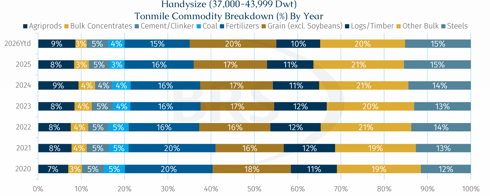
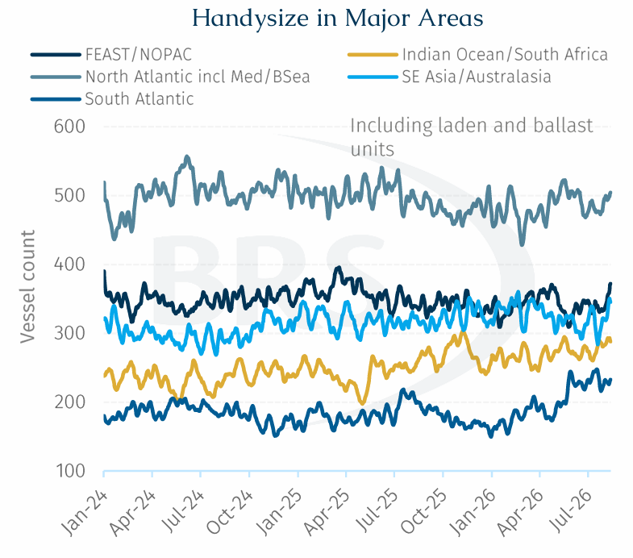
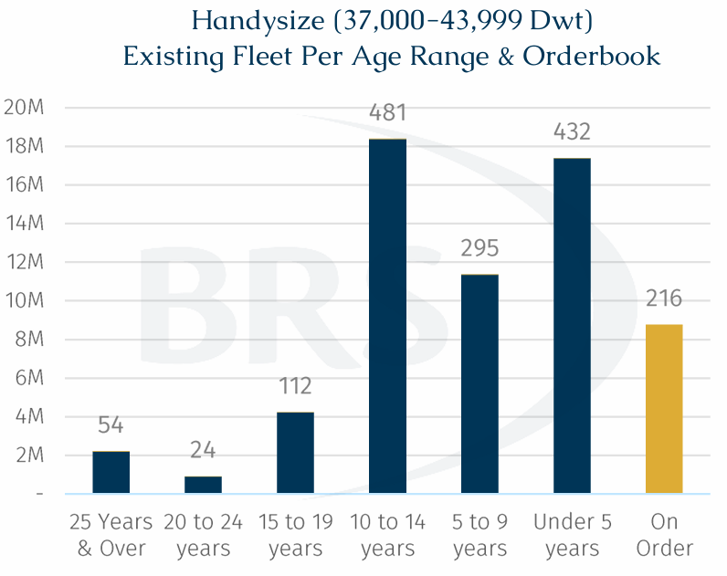
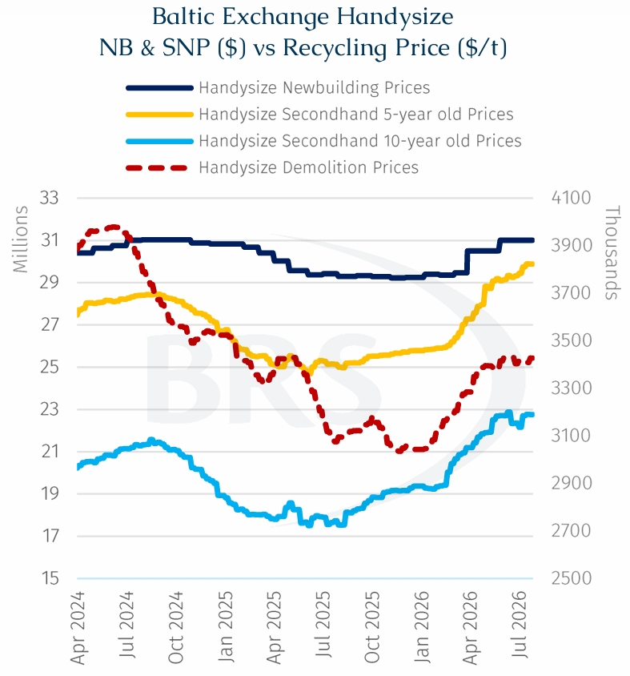

The dry bulk spot market has remained firm of late, encouraging owners to consider further investment in new tonnage. Although Handysizes (37,000-43,999 dwt) remain somewhat peripheral in the broader dry bulk market with lower liquidity than Supramaxes, fewer transactions than Kamsarmaxes and less market-grabbing attention than Capesizes, the segment’s underlying supply-demand fundamentals appear to be improving.
Another notable market feature is the gradual upsizing of the Handysize design. Over time, the typical vessel size has shifted from around 32,500 dwt for units delivered between 2008 and 2014 to approximately 40,000+dwt for vessels delivered since 2020. For context, the latest Baltic Handysize index, introduced in early 2020, is based on a 38,200 dwt unit. This reflects both evolving cargo requirements and owners’ preference for larger, more efficient units, even at the lowest rung of the tonnage totem pole.

Diversified tonne-mile demand supports resilience. Handysize demand is spread across a broad mix of cargoes rather than being driven by a single dominant commodity. According to AXSmarine, ‘Other bulk’ has consistently accounted for around 20% of demand, making it the largest category, while the remaining cargo mix has stayed relatively stable. Unlike its larger counterparts, Handysizes are less exposed to any one major commodity flow, a noteworthy quality given the rapid and abrupt changes in flows seen recently.
Why Handysize Remains Relevant.Unlike larger- or medium-sized vessels that rely on deep-water terminals and high-volume cargo flows, Handysizes continue to play a critical role in many regional trades, particularly across Southeast Asia and other developing markets. In these regions, port infrastructure often remains limited, with cargoes transported by barges to offshore anchorages before being transferred to larger vessels using floating cranes or the vessels' own gear. Compared with modern conveyor-equipped terminals, such operations are more vulnerable to weather disruptions, equipment breakdowns and delays in barge arrivals, resulting in lower loading rates and making flexibility more valuable than scale. As a result, cargoes such as fertilizers, steel products, timber and cement continue to be predominantly carried by geared Handysizes. heir ability to access shallow-draft ports, handle smaller parcel sizes and operate independently of shore-based equipment allows them to serve a wide range of regional trading routes that remain inaccessible or uneconomical for larger vessels. Moreover, the kinetic attacks on port infrastructure in both Ukraine and Russia highlight the strategic importance of owning vessels with the ability to self-load/discharge in the absence of reliable shore equipment.

Another distinguishing feature of the Handysize segment is its geographically diverse trading pattern. The active fleet is spread relatively evenly across the five major trading regions, with the together the North Atlantic, Mediterranean and Black Sea consistently hosting one of the largest vessel concentrations which has averaged around 495 ships over the past three years. Meanwhile, vessel presence in other regions has remained broadly stable, with no single basin dominating overall demand.
Both laden and ballasting vessel counts are also relatively well balanced across regions, with fluctuations remaining moderate over time. This contrasts with larger dry bulk segments such as Capesize, where fleet positioning is often heavily influenced by a limited number of long-haul trades, resulting in periods of vessel congestion in the South Atlantic and acute tonnage shortages in China.
Consequently, the Handysize market is not reliant on a single demand centre, reducing exposure to regional shocks and supporting vessel utilisation across a wide range of trade routes. This diversified deployment profile provides an additional layer of earnings resilience and helps explain the segment's relatively balanced market dynamics.
Looking forward, we see four structural tailwinds supporting geared bulkers, particularly Handysizes. First is China’s evolving role in global trade. As the country becomes an increasingly important exporter of geared cargoes, it is creating more employment opportunities and improving the potential for vessel triangulation. Second is supply-chain fragmentation. Geopolitical tensions can make trade flows less direct and vessels less readily interchangeable across regions, increasing tonne-mile demand and periodically creating positional tightness.
Third is reconstruction demand. Over time, rebuilding activity in Ukraine and parts of the Middle East could generate additional seaborne demand for steel, cement, aggregates and other construction-related materials, many of which are well suited to geared tonnage. Finally, strategic inventory building may provide a more persistent source of cargo demand as companies and governments reassess the risks of operating excessively lean supply chains, particularly for food, energy, fertilisers and essential industrial inputs.

An ageing fleet is becoming increasingly visible. While the current Handysize fleet remains relatively young, with an average age of around 8.6 years, the first signs of ageing are gradually emerging. Vessels built between 2012 and 2017 account for approximately 34% of the existing fleet, representing the largest age cohort. Assuming a typical demolition age of around 25 + years, a significant portion of these ships should begin approaching retirement from the mid-2030s onwards, creating a future replacement requirement for the segment.
However, newbuilding activity remains exceptionally limited. This year only 19 Handysize orders have been placed globally, with Japanese shipyards securing the majority of contracts, while Chinese yards account for just four units. Meanwhile, asset values continue to firm. Newbuilding prices have risen by around 6% from their three-year low earlier this year to approximately $ 31mln, while five-year-old secondhand values have surged by nearly 19% to around $29.7 mln.

The strength of demand is perhaps best illustrated at the older end of the fleet. A recent transaction involving a 29-year-old Japanese-built Handysize reportedly achieved $4.2 mln, only marginally above its estimated scrap value of around $3.4 mln. Such pricing suggests that even vessels nearing the end of their economic life continue to command meaningful trading premiums, reflecting the market's ongoing need for smaller geared tonnage.
The lack of new orders does not necessarily indicate weak confidence in the segment. Instead, it largely reflects shipyard dynamics. Over the past two years, most slots at top tier yards have been absorbed by larger higher-valued ship types, notably tankers, gas carriers and VLOCs. For example, if the same Chinese yard berth were allocated to an MR tanker, the newbuilding price would be around $45 mln, roughly 45% higher than that of a similarly sized Handysize.
This naturally gives yards a strong incentive to prioritise higher value vessels over smaller dry bulkers. Compared with these segments, Handysize newbuildings offer lower absolute earnings for shipyards, leaving relatively few available slots. As a result, some owners are increasingly exploring alternative options at second-tier Chinese yards, where limited capacity remains available.
Accordingly, while the Handysize fleet does not yet face an immediate ageing challenge, the combination of a thin orderbook, constrained shipyard availability and persistent demand for smaller geared vessels points towards gradually tightening replacement dynamics over the longer term.
Large Handysizes may not offer the same liquidity and visibility of the larger dry bulk segments, but this is also what makes its investment case easy to overlook. Demand is supported by a broad cargo base, access to infrastructure-constrained ports and balanced regional employment, and while fresh ordering remains subdued replacement needs will become more visible over time. The segment is therefore not an immediate scarcity story, but a gradually tightening one, offering investors exposure to resilient utilisation and increasingly supportive long-term supply dynamics.